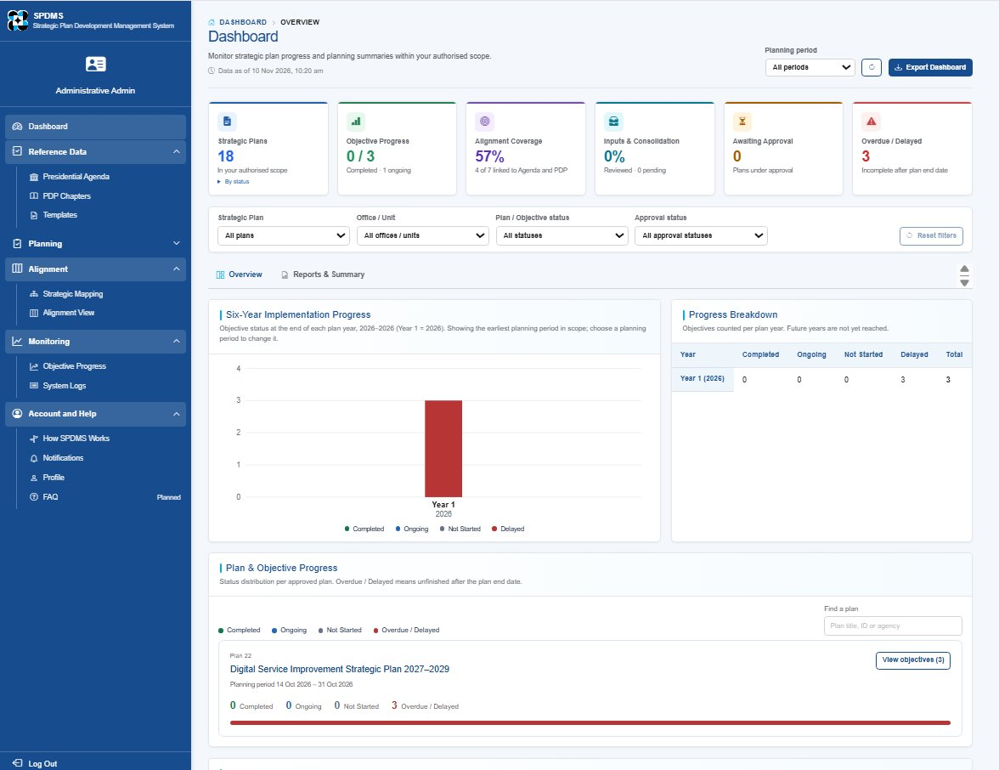
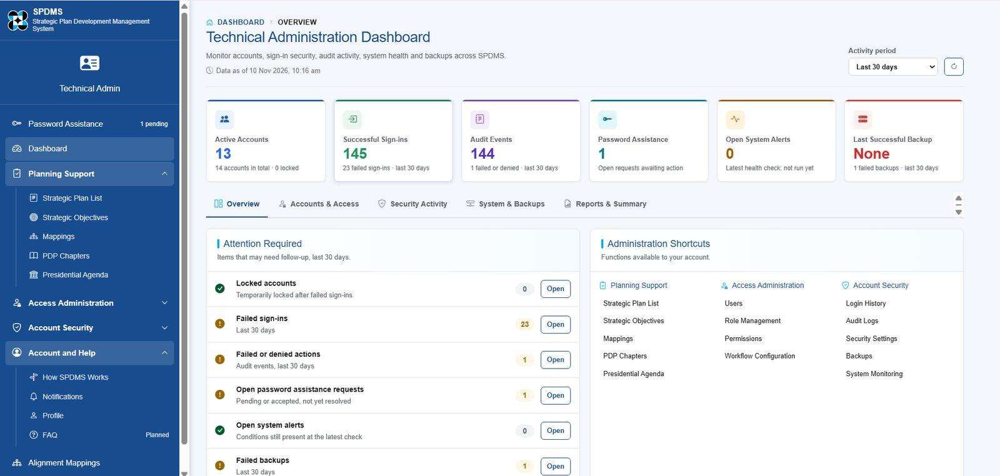
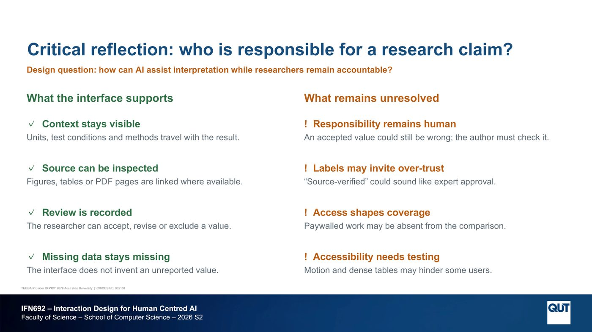
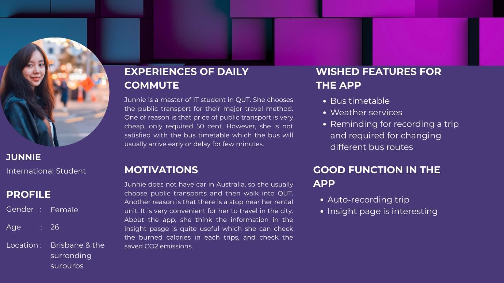

I turn what users need into working, tested software.
IT graduate (QUT Master of IT, Computer Science, Nov 2026) and Junior Developer Intern at AImmi. I design and build front ends, run user research, and shape AI features so people can trust and check them.
Front-end developmentUX research & testingAI product designRequirements & client delivery
Three in-depth case studies, each showing a different part of how I work: delivering for a client, designing AI with users, and finding problems through research.
Industry capstone · Front-end lead
Strategic Plan Development Management System
Client: Philippine Department of Science & Technology · 7-person Agile team · 2026
A multi-role web system that helps a government department draft, review, approve and track its strategic plans. I owned the whole front end, from wireframes to the final coded pages.
5client review rounds to sign-off
5government user roles
Topcode contributor in a team of 7
What I did
Turned client needs into requirements, user flows and wireframes.
Designed every screen in Figma and agreed layouts and interactions with the client.
Coded all front-end pages: login and profile, user management, role-based access, management dashboard and report, mapping page and landing page.
Built the strategic objective mapping back end (MySQL, REST APIs).
How I worked
Presented each working version to the client and adjusted it from their feedback.
Reported to the project manager and resolved integration conflicts with back-end developers.
Wrote the user guide and process flowcharts so staff could learn the system.
Tracked work in Jira and shipped through Git/GitHub.
Landing page I designed and built.

Management dashboard: plan progress, filters and export.Strategic mapping: a step-by-step, three-level link from national agenda to department objectives.

Technical Admin dashboard: account security, audit events and backups at a glance.
QUT IFN692 Interaction Design for Human-Centred AI & CAB432 Cloud Computing · 2026
Problem: researchers in green metallurgy read many papers, but results such as “11.72 %/min”, “100%” and “33%” look comparable when they measure different things. AI chatbots make this worse by giving answers without sources. My answer: a research workspace that keeps every result beside its method, conditions and original figure, and lets the researcher decide what to keep.
3rounds of user testing
7researchers tested it
3redesigns, one after each round
The three core ideas: choose your comparison fields, trace each value to its source, and record the researcher's decision.
What testing changed
Round 1 (experts): they got lost in a dense screen, so I added a step-by-step guide (the “Ore” mascot) and linked every value to its original chart.
Round 2 (newcomers): search felt dull and slow, so I added a map that grows from the search to related papers and removed extra confirmation steps.
Round 3 (experts): they asked about accuracy and bulk downloading, so I researched the ethics and access rules and designed papers to be read one at a time.
I chose not to build a chatbot, because testers said long AI answers felt like one and hid the evidence.
Why numbers can't simply be ranked.Design process and an honest list of what is prepared vs. working.

Responsible AI: what the interface supports and what is still unresolved.
Build
Clickable prototype in HTML/JavaScript. The supporting cloud service runs in Python (FastAPI) and Docker on AWS: an API takes a question, a queue hands it to background workers that scale from 0 to 5 with demand, and repeated questions are answered from a cache. The extraction step is still a placeholder; a real AI model call is the next step.
Travelly – active transport app research & redesign
QUT IFN637 · a live QUT research app that encourages walking and cycling · 2025
We studied why people struggled with Travelly and turned the findings into a redesign. Research was run under university ethics approval.
4research participants
7usability and trust themes found
6prototype test sessions (I ran 3)
Methods
Interviews and think-aloud usability tests on four real tasks.
3-day diary study and a hands-on journey-mapping activity.
Affinity diagram and thematic analysis of the transcripts.
Key findings
Repeated sign-up and password failures.
CO₂ figures were valued but not explained.
Trip recording needed clear start and stop controls.
Affinity diagram grouping participant notes.Seven themes from the analysis.

Persona built from the research.Journey map: pain points and design opportunities.
Outcome
A persona, journey map and design brief, then an interactive Figma prototype of the key flows, tested with users before any development. View the Figma prototype (start from Flow 1).
Split a confusing mix of voice, transcription and text modes into two clear flows: real-time voice Q&A and a text chat by typing or dictation. Wrote the voice API code and designed the flows; also translated and updated product copy and worked with the founder on requirements and releases.
QUT Brains & Bots Hackathon. A device that finds a person, asks triage questions by voice in English or Chinese, falls back to hand gestures if they can't speak, and reports to a live dashboard, even offline. I built the bilingual offline voice and gesture triage flow.
A web app where employees apply for leave, see their shifts and request swaps, and admins approve requests and assign shifts. I built shift assignment, swap and conflict-check features.
A Thai food ordering site with menu, basket, checkout and an admin area for menu items and orders. I built the login and registration front end, logout and the custom error pages.
Tools: Python, Flask, MySQL, HTML, CSS
Machine learning · QUT
Used car risk prediction & text classification
Cleaned 41,000+ car sales records and compared decision tree, logistic regression and neural network models to flag bad purchases (best ROC AUC 0.77). In a second project my BERTweet text classifier reached 94.0% test accuracy and 0.946 F1.
I'm a QUT Master of IT (Computer Science) graduate based in Brisbane. At AImmi I redesigned how users talk to the platform's AI assistant, splitting a confusing mix of voice, transcription and text modes into two clear flows: a real-time voice conversation and a text chat. I work directly with the founder to turn requests into requirements, test changes and release them.
I like the space between users, business and developers: finding out what people actually need, explaining trade-offs in plain language, and building something they can use.